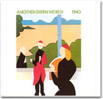

|

夏の花火が好きだ。夜空に散りばめられる光と色の遊戯は、最高のミュージカルであり、オペラであり、映画である。ゆっくりと間をおいて、ドーン、ドーンと大輪の花が開く。かと思えば、歯止めのきかない機関銃の連射のように、無数の光と色の粒がこれでもか、これでもかと噴き出され、ぶちまけられ、金糸が錯乱し、やがて天頂から大きなアーチを描いて金粉の雨が降る。その多彩な登場人物（色や形）、緩急の変化や驚きとため息のツボをおさえた展開、クライマックスの作り方――すべてにおいて、花火は演劇的である。そして、そこに音楽が鳴る。
ロングトーンの美しいメロディーであったり、力強いコーラスであったり、アフリカの太鼓のリズムであったり、アルトサックスのフリーキーなアドリブであったり……。実際にそういう音楽が会場に流れていたわけではなく、それはすべて、わたしの頭の中で鳴っていた。ヒュ〜〜〜と火の玉が空を昇っていく音、ドーンと花開く音、バチバチバチバチ！ とまさに火花を散らす音、沸き起こる歓声と拍手、迷子を知らせるスピーカーの声、混線して耳にまとわりついてくる、周囲のカップルや家族連れのたわいもない会話……それらの現実の音とは別のところで、確かに音楽が鳴っていた。現実のスペクタクルに合わせて、現実の音に重なることなく、別のところで、確かに非現実の音が鳴っていた。
これは、絵画を見て音楽を感じるときと同じだ。他にも風景、建築物、書、写真、スポーツ、文章や詩、場合によっては人の表情やたたずまいにも、音や音楽を感じることがある。（幻聴という類のものとは違うものだと思っている。）
田園風景そのものや、それを写実的に描いた絵、あるいは写真を見て、ベートーヴェンの「田園交響曲」が頭の中に鳴り響くということではない。あるいは水車小屋の絵を見て水音が聞こえたり、描かれた鳥のさえずりが聞こえたり、ということではない。教科書の表紙や挿絵でよく見かける、たとえば古代ギリシャの陶器に描かれた笛や竪琴を演奏する人、中世の「楽器を演奏する天使たち」（日本でいえば、宇治の平等院鳳凰堂の阿弥陀如来像を囲む壁面に描かれた、雲に乗り楽器を持った菩薩たちか？）、バロック時代の宮殿での演奏会風景、マネの「笛を吹く少年」、ルノワールの「ピアノを弾く少女」など、「音楽」にちなんだ絵からまさにその音楽が聞こえてくる、ということではない。それも確かにある。おいしそうに描かれた果物の絵を見ると、その味が口の中に広がるのと同じで、水車や小川の音が聞こえてきたり、笛の音が聞こえてきたり（昔の楽器の音は知らないから、想像の域を出ないものが多いが）、写実的な絵に素直にベタな反応をすることは確かだ。でも、花火の話の流れでいうところの、「音楽を感じる」「音楽が聞こえる」絵画とは、それらとはまったく異質のものである。
一体これは何？ と言われるような、マティス、クレー、ミロ、カンディンスキーらの抽象画。これら20世紀以降のいわゆる現代絵画こそ、わたしにとって無限の音楽を奏でる魔法のオルゴールなのだ。マティスなら、その名も「ジャズ」という切り絵のシリーズ。ザクザクと切りぬかれたさまざまな面の形、くっきりとした色彩、その大胆な組み合わせ。とくにジャズがフル・ヴァージョンで聞こえてくるわけではないが、見るたびに、活きのいい音たちがはじけるように飛び出してきたり、ブォ〜〜と太い音が響いたり、乾いた太鼓が軽快な変拍子のリズムを打ち鳴らしたりと、さまざまな音楽を体験する。それはクレーにもミロにも当てはまる。クレーのやさしい色彩と線からは、これ以上ないほど美しいメロディーとハーモニーが聞こえてくる。やわらかな線がメロディーになり、折り重なり響き合う色がハーモニーとなって聞こえてくるのだろうか。
同じようにさまざまな音楽が聞こえてくるのが、ガウディやフンデルトヴァッサーの建築物だ。バルセロナに今なお建築中のサグラダ・ファミリア教会。ダバダ〜〜♪という、あのコーヒーのCMソングではなく、ここはやはりパイプ・オルガンの重厚な響きに体ごと包まれる感覚だ。それも、ヨーロッパ各地の大聖堂で演奏される正統的なオルガン曲とは一味違う、たくさん細かい遊びの要素があって、歪んだりねじれたりしながらうねるように展開する生き物のような音楽。実際、ガウディはバルセロナの街を音楽で包もうとしたのか、この教会を巨大な楽器として設計したという。そんな話を聞くと、ますます壮大な音楽が頭の中で鳴り響くのである。
ウィーンを中心に点在するフンデルトヴァッサー作の住宅や教会。カラフルで不規則で、どこまでも伸びていくような曲線やらせんがたくさん使われ、形も色もさまざまな窓や壁に草木がおおい、水が流れる。そんな建物に、ほぼ同時代を生きたクレーやミロの絵画に通じるものを感じる。フンデルトヴァッサーの建築物は立体なだけに、カラフルなメロディーやハーモニー、生きたリズムが、より鮮明にステレオ効果を伴って響いてくるようだ。
かつて美術研究家フェノロサが、奈良の薬師寺東塔をそのバランスの見事さゆえに「凍れる音楽」と評したが、フンデルトヴァッサーの建物は、凍っちゃいない、流れる音楽だと思う。（フンデルトヴァッサーとは、ドイツ語で「百の水」！）
カラフルな絵画や建築の一方で、墨一色の〈書〉にも、また別の音楽が感じられる。書は墨一色でも、濃淡や筆の運び方などで無限の表現が可能である。だが、油彩画などと違って、上書きができない一回性のものだ。絵画が多くの声や楽器で何度もテイクをくり返し、ミキシングして最良のものに作り上げたCDの音楽だとすれば、書はまさにソロのライヴ演奏である。一度きりの演奏（＝書く行為）にのぞむ緊張感、呼吸、勢いが、そのまま書に表れる。オーネット・コールマンのフリー・ジャズを思い出した。
こうしてみると、改めて自分は何にでも音楽を感じてしまうたちなのだと、つくづく思う。何事についても、感性にひっかかる基準が「音楽的か否か」ということのようだ。確かに、色彩にも、造形にも、動きにも、ことばにも、表情やしぐさ、たたずまい、風景、人生、人間関係にまでも、「音楽」や「音」を感じて生きている。
何かを見て、聴いて、音楽を感じる人、光や色彩を感じる人、空気や波動を感じる人、ことばが浮かんでくる人、様々だろう。それをその人なりに表現すると、「音楽」になり、「絵」になり、「造形」になり、「書」になり、「ダンス」になり、「演技」になり、あるいは「小説」や「詩」になる。ここには複雑なクロスオーヴァーも起こりうる。音楽を聴いて色彩を感じ、それをダンスにしたり。絵を見て音楽を感じ、それをことばにしたり。わたしがそうだ。
音楽的な感性の人は、何を見ても無意識に音楽を尺度にしてしまうのだ。絶対音感があると何を聴いてもドレミで聴きとってしまうが、それとは別の感性レベルで、何を見ても音楽的にとらえる習性があるようだ。
なぜ、そんなことが起こるのか？
音楽は、世界中に歴史や地域や民族の数だけ種類がある。メロディー、リズム、ハーモニーがあり、それらの安定した穏やかな流れがあり、急激な変化、混乱がある。模倣や反復があり、遊びがある。音階、旋法、形式、調性、機能和声などの枠があり、主音と属音の力関係があり、それらからの逸脱、反発があり、闘争があり、不協和音も沈黙も即興も偶然もある。ソロがあり、合奏があり、大編成のオーケストラがあり、異なるジャンルのコラボレーションがある。これらの要素はすべて、世の中のあらゆることを反映している。人間も、人生も、音楽で語ることができるのだ。何事も音楽を基準に見ることができる、見てしまえるわけがここにある。
絵画や建築物に「音楽が聞こえる」のは、それらが音楽の何らかの要素を含んでいるからだ。過激でグロテスクなパフォーマンスアートや悲惨な廃墟の上にも、天上の音楽は鳴り響くのである。
|